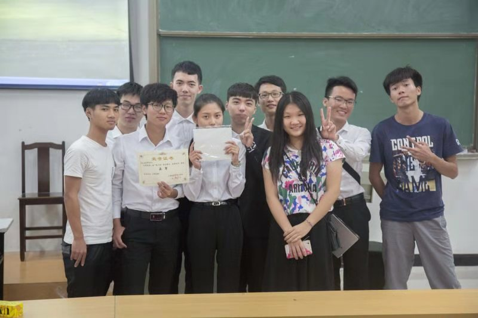
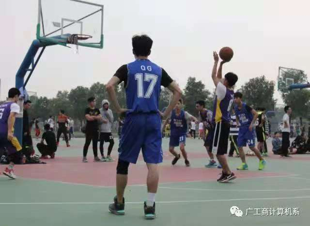
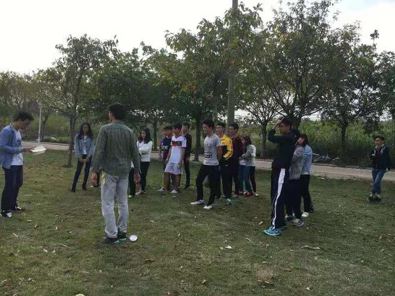

嘿，这是我大一的时候，我们班辩论赛杀进决赛，虽然遗憾措施冠军，但是也是一份很珍贵的经历。我还记得我在初赛的时候那种紧张感，慢慢地随着赛事的进行，我变得愈发冷静，最后带队杀入决赛，虽然没能在决赛中代表班级出战，但是你们的表现已经非常优秀了。

左边的这幅图片，就是我们班在打计算机班级赛决赛时候的拍的，没错，又是决赛，我们又是亚军，说起亚军，我们还挺有缘的哈哈。看见没，左一双手叉腰帅气的背影，那个就是我。

记忆中，这图片好像使我们班在大一的时候，与会计B9班的联谊，当然，在计算机如此缺乏女生的情况下，这种活动我是不可能会错过的，还记得，当时活动有踩气球，模仿对方动作等。当时玩的真的不亦乐乎。对，绿衣服那个就是我，这次还是帅气的背影。

个人信息
- 你好，我叫关伟文。出生于1996年，现就读于广州工商学院,我的专业是网络工程.我比较喜欢运动，平常打打球，跑跑步，喜欢听歌。 放假时候喜欢到处走，我也比较喜欢打游戏，但不是经常的那种。偶尔看看书。我性格有点古怪，时而乐观、时而孤僻，有时候很活跃， 可有的时候却沉默寡言。我是一个有上进心，有想法的人，乐于奉献，如果你想了解我更多的信息，可以仔细查阅我的个人博客。